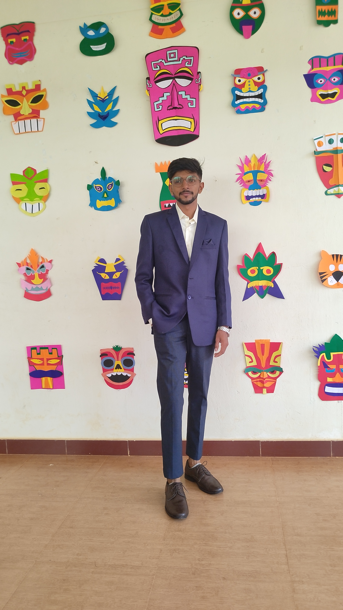

VIJENDRA

OBJECTIVE
To pursue a professional career where my skills and knowledge can be utilized in
maximizing company profits and wish to develop a more rounded skill set and improve
my job capability.
EDUCATION
- Yenepoya Institute of Technology Moodbidri
2019 - 2023
B.E in Information Science And Engineering
7.49 CGPA
-
Government PU College Kundapura
2018 - 2019
Pre University
69.33
-
Sandeepan English Medium School Nagoor
2016 - 2017
Secondary School Leaving Certificate
85.63
TECHNICAL SKILLS
-
Programming Languages: C, Java, Python, Flask Framework, RESTful API Development,
MySQL.
-
Tools used: MySQL Workbench, Postman, MS office, Android studio, Net beans, Oracle.
-
Operating System worked on: Windows, Fedora, Ubuntu
PROJECTS UNDERTAKEN
- Machine learning approach for crop maturity detection and automatic sprinkler
irrigation using IOT technique
- Library Management System in database using MySQL code.
- Covid Patient Management System on file system using python.
CERTIFICATIONS
-
Basics of python programming
Microsoft Technology Associate
-
Android App Using Kotlin
Training Provided by IIT Bombay
in 2022.
-
Python 3.4.3 Training
Provided by IIT Bombay in 2022.
INTERNSHIP
AI and ML intern at Zephyr technologies and sloutions pvt ltd Mangaluru .
Project Name :LAPTOP PRICE PREDICTION
During my internship, I played a vital role in managing laptop price database, where I undertook important
responsibilities like data cleaning, data mapping, and data visualization.
Skills : Python, Numpy, Pandas, Matplotlib, Seaborn.
DECLARATION
I here by declare that all the above information is true and is based on my knowledge.
CONTACT DETAILS
HOBBY